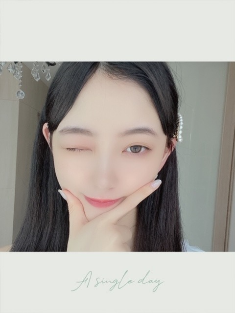
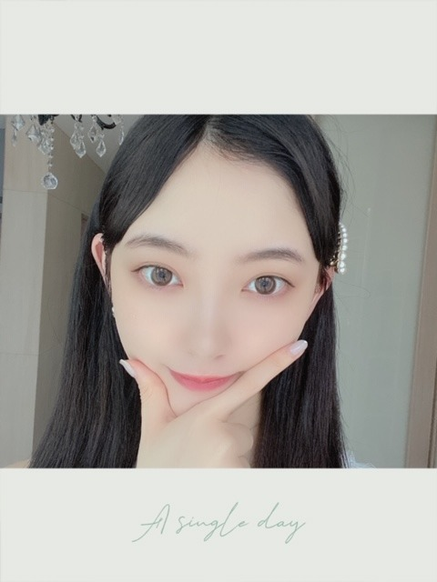

2020/0614Sunホテルデルーナを早く観たいのに
レンタルでも放送でも何でもいいので
観させてください〜〜
とりあえずIU様の画像だけ保存してます。
愛の不時着は今観てます ｷ ｭ ﾝ
最近は、
シンデレラクロゼット を読み始めました❤︎
たまのごほうび もよかったです〜
映画だと、クルーレス プリティプリンセス
みたいな女の子が大変身する話がだいすき


暑くなってきたので
バテないご飯を作ってます
栄養とりつつ
スタミナつけましょー！
おすすめは
豚キムチ
大葉と梅の和風うどん
すき焼き風牛肉ごぼう煮
です☺︎
人生初ブリーチをした時の☺︎
明るいですね
親友が写真集を楽天版で購入してくれたみたいで
連絡がきました、うれしいなー
明日からメイキング動画見れます（╹◡╹）
ﾜ ｸ ﾜ ｸ
では
2020/06/14 14:36
コメント(318)
ブログ更新ありがとう！
髪が明るい未央奈も可愛いですね！
最近暑いので熱中症気をつけてください！
夏バテもしないように〜
（僕は多分しますね笑）
髪が明るい未央奈も可愛いですね！
最近暑いので熱中症気をつけてください！
夏バテもしないように〜
（僕は多分しますね笑）
堀ちゃん、ブログ更新ありがとう。
堀ちゃんはいろんなジャンルの作品見たり読んだりしてるよね
多趣味でいいと思います。
暑くてジメジメ、体力つけないとバテちゃうね。
スタミナつけないとね。
初ブリーチの画像ありがとう
これは去年だったっけな？
金髪に近い色だね、かわいいです。
写真集楽天版買いましたよ、明日メイキング動画見れるんで楽しみです。
では〜
堀ちゃんはいろんなジャンルの作品見たり読んだりしてるよね
多趣味でいいと思います。
暑くてジメジメ、体力つけないとバテちゃうね。
スタミナつけないとね。
初ブリーチの画像ありがとう
これは去年だったっけな？
金髪に近い色だね、かわいいです。
写真集楽天版買いましたよ、明日メイキング動画見れるんで楽しみです。
では〜
最近更新してなかったから今日してくれてめっちゃうれしぃーｷﾀ━(ﾟ∀ﾟ)━!
ブログ更新ありがとう♪
ブリーチしたことないな～
すごく明るくなるんやね(^o^;)
未央奈ちゃんは何でも似合うよね☆
写真集も見てるよ～(*^^*)
元気もらってます！
ブリーチしたことないな～
すごく明るくなるんやね(^o^;)
未央奈ちゃんは何でも似合うよね☆
写真集も見てるよ～(*^^*)
元気もらってます！
みおな

デコ出しロングヘアーの未央奈ちゃんもとても
綺麗だけど、今回はこの髪の明るさのロングヘアーカチューシャ未央奈ちゃんが1番似合ってて綺麗だよ
勿論インスタライブやショールーム、インスタで
みせてたショートヘアーもとても似合ってて綺麗だよ
「しあわせの保護色」のMVでカチューシャしてるし
同じ2期生の北野日向子ちゃんとのニューアドレアの
女子二人旅でもカチューシャを購入してたから
未央奈ちゃんはカチューシャがとても好きなんだね！
6/19は乃木坂46時間TVが放送だから楽しみにしてるね！
では
綺麗だけど、今回はこの髪の明るさのロングヘアーカチューシャ未央奈ちゃんが1番似合ってて綺麗だよ
勿論インスタライブやショールーム、インスタで
みせてたショートヘアーもとても似合ってて綺麗だよ
「しあわせの保護色」のMVでカチューシャしてるし
同じ2期生の北野日向子ちゃんとのニューアドレアの
女子二人旅でもカチューシャを購入してたから
未央奈ちゃんはカチューシャがとても好きなんだね！
6/19は乃木坂46時間TVが放送だから楽しみにしてるね！
では
ホテルデルーナ
IUさんのドラマなんだ。ふむふむ。
愛の不時着！
シンデレラクロゼットいいね！おもしろそう！
みおちゃん好きそう！
おしゃれ。
興味ある！！バテないご飯。
栄養とりつつスタミナとる。むむむ。
おすすめありがと〜☺️
今度作ってみるぅ〜〜
かわいい！
人生初ブリーチ。明るい♪
✌️
メイキング動画楽しみ〜
明日休みだからじっくり観るね〜(*´○`*)
ウキウキ
ではでは〜グッナイ！（╹◡╹）
IUさんのドラマなんだ。ふむふむ。
愛の不時着！
シンデレラクロゼットいいね！おもしろそう！
みおちゃん好きそう！
おしゃれ。
興味ある！！バテないご飯。
栄養とりつつスタミナとる。むむむ。
おすすめありがと〜☺️
今度作ってみるぅ〜〜
かわいい！
人生初ブリーチ。明るい♪
✌️
メイキング動画楽しみ〜
明日休みだからじっくり観るね〜(*´○`*)
ウキウキ
ではでは〜グッナイ！（╹◡╹）
「ホテルデルーナ」
テレビでついてたのを何となく見てたら面白くて結局最後まで見ちゃった。来週が待ち遠しいよ。
堀ちゃんみたいにかわいかった。
テレビでついてたのを何となく見てたら面白くて結局最後まで見ちゃった。来週が待ち遠しいよ。
堀ちゃんみたいにかわいかった。
堀ちゃんこんばんは！
ほんとに最近暑いですね、湿度も高いし疲れちゃうので栄養大事(o^^o)
すき焼き風牛肉ごぼう煮、来週作って見ようかな、cookpadで検索だ〜( ´ ▽ ` )
私ごとですが、堀ちゃんが4月頃写真で見せてくれたサムギョプサルに焦がれて、その印象が今でも続いてて2週間に1回はサムギョプサル作ってます( ´ ▽ ` )笑
あのときは怪我で入院してて退院明けに母が手伝いに来てくれたんですが、
「何か食べたいものある？」って聞かれたときに「サムギョプサル！」って即答したのを覚えてます笑
ちなみに今日もサムギョプサルでした(o^^o)笑
またお時間できたら料理の写真見せてくれたら嬉しいです〜、休日に同じもの作ります( ´ ▽ ` )♩
明るい髪も可愛いですね〜、カチューシャしてニコってしてる写真の可愛さが凄いです(o^^o)
明るい髪というとホリッピーを思い出しますが、気品を感じるのでホリッピーと呼ぶには少し違和感がありますね( ´ ▽ ` )笑
こう思うと堀ちゃんは色んな姿を見せてくれてますね、思い返すだけでも楽しいです(^^)♩
また日常が戻ったら、色んな堀ちゃんが見られるのが楽しみだなぁ(*´▽｀*)
話は変わりますが、全部嫌になっちゃうときってありますよね、人生長いですし色んな人と出会うので、そんな気分のときがあるのも当然だと思います( ´ ー ` )
僕は嫌になったときとかやる気が出ない日は、明日の自分のためだけを思ってやり過ごします(^^)
それまでの積み重ねとか人間関係とか、短い時間の感情や行動で自分の未来を苦しくしてしまうのは勿体ないですし、またそんな気分になったときに余計しんどく感じちゃう気がするので( ´ ▽ ` )
今の自分を労りつつ、明日の自分のために最低限のことだけやっとこ、みたいな(^^)
先日堀ちゃんも、ストーリーでのファンの方への返信で同じニュアンスのことを言ってて、たぶん同じ感覚だ！って嬉しかったです(o^^o)笑
さてさて！来週は46時間TVですね！
大画面で見られるようにfire stickも買って準備万端です！( ´ ▽ ` )笑
準備で慌ただしいかもしれませんが、水分ミネラル補給しながらお身体大事にしてください！
本番も少しぐらい寝ちゃっても大丈夫ですよ(o^^o)笑
では！またコメントさせてくださいー！
ほんとに最近暑いですね、湿度も高いし疲れちゃうので栄養大事(o^^o)
すき焼き風牛肉ごぼう煮、来週作って見ようかな、cookpadで検索だ〜( ´ ▽ ` )
私ごとですが、堀ちゃんが4月頃写真で見せてくれたサムギョプサルに焦がれて、その印象が今でも続いてて2週間に1回はサムギョプサル作ってます( ´ ▽ ` )笑
あのときは怪我で入院してて退院明けに母が手伝いに来てくれたんですが、
「何か食べたいものある？」って聞かれたときに「サムギョプサル！」って即答したのを覚えてます笑
ちなみに今日もサムギョプサルでした(o^^o)笑
またお時間できたら料理の写真見せてくれたら嬉しいです〜、休日に同じもの作ります( ´ ▽ ` )♩
明るい髪も可愛いですね〜、カチューシャしてニコってしてる写真の可愛さが凄いです(o^^o)
明るい髪というとホリッピーを思い出しますが、気品を感じるのでホリッピーと呼ぶには少し違和感がありますね( ´ ▽ ` )笑
こう思うと堀ちゃんは色んな姿を見せてくれてますね、思い返すだけでも楽しいです(^^)♩
また日常が戻ったら、色んな堀ちゃんが見られるのが楽しみだなぁ(*´▽｀*)
話は変わりますが、全部嫌になっちゃうときってありますよね、人生長いですし色んな人と出会うので、そんな気分のときがあるのも当然だと思います( ´ ー ` )
僕は嫌になったときとかやる気が出ない日は、明日の自分のためだけを思ってやり過ごします(^^)
それまでの積み重ねとか人間関係とか、短い時間の感情や行動で自分の未来を苦しくしてしまうのは勿体ないですし、またそんな気分になったときに余計しんどく感じちゃう気がするので( ´ ▽ ` )
今の自分を労りつつ、明日の自分のために最低限のことだけやっとこ、みたいな(^^)
先日堀ちゃんも、ストーリーでのファンの方への返信で同じニュアンスのことを言ってて、たぶん同じ感覚だ！って嬉しかったです(o^^o)笑
さてさて！来週は46時間TVですね！
大画面で見られるようにfire stickも買って準備万端です！( ´ ▽ ` )笑
準備で慌ただしいかもしれませんが、水分ミネラル補給しながらお身体大事にしてください！
本番も少しぐらい寝ちゃっても大丈夫ですよ(o^^o)笑
では！またコメントさせてくださいー！
海ドラは、映画続編のウォッチメンが女性主人公がクールで大人向けで最高だった・・・。
SFサスペンスでゴシックな映像美が素晴らしい！
今はマーベルＭＣＵドラマとマンダロリアン２待ちです。女性変身のサクセス系なら、ゴーストワールドとブライズメイズとピッチパーフェクトかな！？ジャンル系ならスペースバンパイアとアンダーザスキンとルーシーとバーバレラとペネロピも良いよ・・・！？笑
このあとゴーンガール観てから寝ようっと・・・。
体調に気をつけて頑張りましょう！
SFサスペンスでゴシックな映像美が素晴らしい！
今はマーベルＭＣＵドラマとマンダロリアン２待ちです。女性変身のサクセス系なら、ゴーストワールドとブライズメイズとピッチパーフェクトかな！？ジャンル系ならスペースバンパイアとアンダーザスキンとルーシーとバーバレラとペネロピも良いよ・・・！？笑
このあとゴーンガール観てから寝ようっと・・・。
体調に気をつけて頑張りましょう！
堀さん、こんばんは。
雨の日に映画見るなら、逆にベンスティラーのLIFE!とかで旅行気分味わいたいところです。
ホテルデルーナはwowow加入してwowowオンラインにID新規登録すれば2話まで見れますよ。今しがた見たんですけど、衣装も内装も洒落ててそこも堀さん好みな気がしました。あと地下鉄の場面がかわいくて良かったです。
シンデレラクロゼットも2話まで読んで見たんですけど、メイクやファッションは何のためにするのかが勉強できてとても興味深かったです。
髪色は両方お似合いです。髪飾りやカチューシャや眼鏡は髪色に合わせてるんですね。どれもお似合いでどの堀さんも美人さんです。
そういえばスーパーヒーローはマスク被るしドラゴンボールは強くなるにつれて髪色が金赤青と変わっていくし、変身願望って人類共通の夢なのかもしれませんね。
では、写真集のメイキング動画楽しみにしてます。たくさん栄養とって暑さ乗り切ってくださいね。
雨の日に映画見るなら、逆にベンスティラーのLIFE!とかで旅行気分味わいたいところです。
ホテルデルーナはwowow加入してwowowオンラインにID新規登録すれば2話まで見れますよ。今しがた見たんですけど、衣装も内装も洒落ててそこも堀さん好みな気がしました。あと地下鉄の場面がかわいくて良かったです。
シンデレラクロゼットも2話まで読んで見たんですけど、メイクやファッションは何のためにするのかが勉強できてとても興味深かったです。
髪色は両方お似合いです。髪飾りやカチューシャや眼鏡は髪色に合わせてるんですね。どれもお似合いでどの堀さんも美人さんです。
そういえばスーパーヒーローはマスク被るしドラゴンボールは強くなるにつれて髪色が金赤青と変わっていくし、変身願望って人類共通の夢なのかもしれませんね。
では、写真集のメイキング動画楽しみにしてます。たくさん栄養とって暑さ乗り切ってくださいね。
アンハサウェイ一時期待ち受けにしてたよ♪堀ちゃんも好きだったよねアンハサウェイ♪ヘップバーンの映画のCDを聴いてたよ最近♪いつ聴いてもいいね♪夏のsongもう一曲オススメ♪ナイス橋本！夏の手紙！ではでは♪
かわいいー
うん！！
みおなは明るい色 似合うってイメージしてたけど
よく似合ってるよ(*´ω｀*)
あの…みおなぁ 俺写真集買った方がいい…？笑
買
みおなは明るい色 似合うってイメージしてたけど
よく似合ってるよ(*´ω｀*)
あの…みおなぁ 俺写真集買った方がいい…？笑
買
いつみても、金髪未央奈ちゃん可愛いです。
(２回目のブログにコメント失礼致します。)
(２回目のブログにコメント失礼致します。)
未央奈としゃべってみたいから握手会いきたいなぁ
未央奈ちゃん、初めまして！
ブログ更新
明るい髪の毛の未央奈ちゃんも素敵です！黒髪の印象が強かったので新鮮な感じがしました！
あと～雨の日に見たくなる映画は、【コーヒーが冷めないうちに】かな。いつもなら映画は１回見たら満足するけど、２回見たくなる映画でした
ちなみに、乃木坂のドキュメンタリー映画は３回です
これからどんどん暑くなるので熱中症にはお気をつけて下さいね！
京都在住ともともでした
バイバ～イ！！！
ブログ更新
明るい髪の毛の未央奈ちゃんも素敵です！黒髪の印象が強かったので新鮮な感じがしました！
あと～雨の日に見たくなる映画は、【コーヒーが冷めないうちに】かな。いつもなら映画は１回見たら満足するけど、２回見たくなる映画でした
ちなみに、乃木坂のドキュメンタリー映画は３回です
これからどんどん暑くなるので熱中症にはお気をつけて下さいね！
京都在住ともともでした
バイバ～イ！！！
みおなちゃん、大好きです
バテないごはんいいね
今年はマスクが手放せない夏になりそうだから、熱中症にも余計に気をつけんとだよね
…どうせなら、コロナさんも梅雨バテ、夏バテしてくれんかね？？
さて、完全にタイミングを逸してしまってどうしたものかと思っていたのだけど、なんか書かないと寝れない魔法にかかってしまったみたいなので。。 ←
←
裸足でSummer
逃げ水
太陽ノック
ひと夏の長さより···
別れ際、もっと好きになる
前のめり
不器用太陽
意外に普段はあんまり季節で曲を〜というのがなかったみたいで、夏曲から選んでみました
まぁでも、いろいろな偶然が重なって起こった出来事とかがあると、やっぱり印象強く残るよね


 ←
←
今年はマスクが手放せない夏になりそうだから、熱中症にも余計に気をつけんとだよね
…どうせなら、コロナさんも梅雨バテ、夏バテしてくれんかね？？
さて、完全にタイミングを逸してしまってどうしたものかと思っていたのだけど、なんか書かないと寝れない魔法にかかってしまったみたいなので。。
裸足でSummer
逃げ水
太陽ノック
ひと夏の長さより···
別れ際、もっと好きになる
前のめり
不器用太陽
意外に普段はあんまり季節で曲を〜というのがなかったみたいで、夏曲から選んでみました
まぁでも、いろいろな偶然が重なって起こった出来事とかがあると、やっぱり印象強く残るよね
未央奈ちゃんありがとうございます！楽しみにしてます‼頑張ります‼良かったです！ありがとうございます！気をつけて下さい。
未央奈ちゃん、おはよう。
昨日このブログを見たあとでスーパーに
買出しに行きました。もちろん、ここに
載っていたメニューの食材を買う為に。
豚キムチを作ろうと思ってたんです。
ですが、完成した時には豚キムチ入りの
焼きうどんになってました…
何故だ？ 微妙に違うぞ？
大葉と梅の和風うどんも確かに書いて
あったよ。ただ、焼きうどんとは
書いてなかったぞ。
どうやら頭の中で２つのメニューとも
簡単に疲れそうだという事がリンクして
尚且つ、豚キムチ＝焼くというのが
強く印象に残ってしまったようです。
簡単に作れそうだと思っていたメニュー
すら覚えていないとは…
自分で自分が心配です。
ただ、味はそれなりに美味しかったので
よしとしますか。スタミナもつけたし
今日も仕事頑張るぞ！と思っていたら
今日お休みでした。
自分で自分が心配です。part 2
では。
昨日このブログを見たあとでスーパーに
買出しに行きました。もちろん、ここに
載っていたメニューの食材を買う為に。
豚キムチを作ろうと思ってたんです。
ですが、完成した時には豚キムチ入りの
焼きうどんになってました…
何故だ？ 微妙に違うぞ？
大葉と梅の和風うどんも確かに書いて
あったよ。ただ、焼きうどんとは
書いてなかったぞ。
どうやら頭の中で２つのメニューとも
簡単に疲れそうだという事がリンクして
尚且つ、豚キムチ＝焼くというのが
強く印象に残ってしまったようです。
簡単に作れそうだと思っていたメニュー
すら覚えていないとは…
自分で自分が心配です。
ただ、味はそれなりに美味しかったので
よしとしますか。スタミナもつけたし
今日も仕事頑張るぞ！と思っていたら
今日お休みでした。
自分で自分が心配です。part 2
では。
デビュー当時から好きですが、「等身大」な、堀さんがいちばん素敵です。
最近は、顔がこわいです。
最近は、顔がこわいです。
未央奈ブログ更新ありがとう（＾人＾）
シンデレラクロゼットいいよね！服装、メイクとっても参考になります
たまのごほうびもエモエモですね！
ふくふくより
シンデレラクロゼットいいよね！服装、メイクとっても参考になります
たまのごほうびもエモエモですね！
ふくふくより
未央奈さん、ブログ更新ありがとう。どこにでもいるおっさんです。
ロングヘアーからのブリーチ、最高だね。
自分、ショート派なんだけど（笑）
結局、未央奈超かわいい！
すっぴんも好きだよ。
ひでき
ロングヘアーからのブリーチ、最高だね。
自分、ショート派なんだけど（笑）
結局、未央奈超かわいい！
すっぴんも好きだよ。
ひでき
はい、宇宙一可愛い
未央奈ちゃん更新ありがとう！
あ、豚キムチひとつお願いします
今日も、髪色が明るかった頃も
いつだって未央奈ちゃんは可愛い。
改めて感じた今日この頃。
ではでは～
あ、豚キムチひとつお願いします
今日も、髪色が明るかった頃も
いつだって未央奈ちゃんは可愛い。
改めて感じた今日この頃。
ではでは～
おはよう！
未央奈。
FRINGE 観た？
面白いよ。
おすすめです！
未央奈。
FRINGE 観た？
面白いよ。
おすすめです！
未央奈ちゃんホント可愛い過ぎ！
いよいよ今週末には46時間TVがはじまるから
楽しみだね
いよいよ今週末には46時間TVがはじまるから
楽しみだね
三枚目の写真、絢音ちゃんに似てるっ！
って思ったー！
顔が似てるっていうか、絢音ちゃんが最近ブログにあげてた写真と撮り方？アングル？が似てたー
2人ともかわいいよー！
って思ったー！
顔が似てるっていうか、絢音ちゃんが最近ブログにあげてた写真と撮り方？アングル？が似てたー
2人ともかわいいよー！
ほっちゃんは、お元気ですか。
コンビニの枝豆入りのかまぼこ、薬がわりで、助かりました。
ありがとうございます。
その内、お話を聞かせてください。
ごきげんよう。
コンビニの枝豆入りのかまぼこ、薬がわりで、助かりました。
ありがとうございます。
その内、お話を聞かせてください。
ごきげんよう。
こんばちは
メイキング動画観たよ～ 綺麗な景色に綺麗で可愛い未央ちゃんが優雅で、見ていて癒されました。
コルシカ島も行きたくなりました 自分のバイク持っていってツーリングしてみたい。
やたら暑いけど、身体に気をつけてね
メイキング動画観たよ～ 綺麗な景色に綺麗で可愛い未央ちゃんが優雅で、見ていて癒されました。
コルシカ島も行きたくなりました 自分のバイク持っていってツーリングしてみたい。
やたら暑いけど、身体に気をつけてね
未央奈ブログ更新ありがとう！
ホテルデルーナって韓国のドラマなんだね。未央奈はいろんなドラマを知ってるなあ。
女の子が大変身する話が好きなのってなんか未央奈っぽくて良いね。
黒髪で前髪分けてるの似合ってて可愛い！
夏バテ対策大事だよねー。僕は昨日ヒレカツ食べたよ。大葉と梅のうどんって美味しそう。
明るい髪色もめちゃくちゃ可愛い！ボブだったから長いのはウィッグかと思ってたけどエクステ？未央奈はどんな髪色も髪型も似合っちゃうからすごいなあ。
楽天ブックスからメール届いたからあとでメイキング見るよ。楽しみー。
では！
ホテルデルーナって韓国のドラマなんだね。未央奈はいろんなドラマを知ってるなあ。
女の子が大変身する話が好きなのってなんか未央奈っぽくて良いね。
黒髪で前髪分けてるの似合ってて可愛い！
夏バテ対策大事だよねー。僕は昨日ヒレカツ食べたよ。大葉と梅のうどんって美味しそう。
明るい髪色もめちゃくちゃ可愛い！ボブだったから長いのはウィッグかと思ってたけどエクステ？未央奈はどんな髪色も髪型も似合っちゃうからすごいなあ。
楽天ブックスからメール届いたからあとでメイキング見るよ。楽しみー。
では！
未央奈ブログ更新ありがとう✊
昨日の夜、ホットギミックをNetflixで観ました！
約1年前なんだね、つい最近のように思えます。。
残念ながら劇場に足を運ぶことが出来なかったので、観れてとても嬉しい ♡
映像や内容が今まで私が出会ったことの無い感じで、いつの間にか惹き込まれていました。
そして初ちゃんの言葉ひとつひとつが重たくて、胸に刺さりました。
亮輝、梓、お兄ちゃんへの対応がそれぞれ全然違って、私はそこにも注目して見てて、特にお兄ちゃんに対しての初ちゃんが可愛かったです、、！
長々と書いてしまいましたが、とても素敵な作品に出会えて幸せです。初ちゃんが未央奈で良かった
きっとこれからも大好きな作品です。
ありがとう！！
昨日の夜、ホットギミックをNetflixで観ました！
約1年前なんだね、つい最近のように思えます。。
残念ながら劇場に足を運ぶことが出来なかったので、観れてとても嬉しい ♡
映像や内容が今まで私が出会ったことの無い感じで、いつの間にか惹き込まれていました。
そして初ちゃんの言葉ひとつひとつが重たくて、胸に刺さりました。
亮輝、梓、お兄ちゃんへの対応がそれぞれ全然違って、私はそこにも注目して見てて、特にお兄ちゃんに対しての初ちゃんが可愛かったです、、！
長々と書いてしまいましたが、とても素敵な作品に出会えて幸せです。初ちゃんが未央奈で良かった
きっとこれからも大好きな作品です。
ありがとう！！
のってくださいと願いをこめて。
堀ちゃんはカワイイこの世で1番だと思う僕でした！
豚キム食べようと思います。
モバメ読みました。
君に読む物語
小さな恋のメロディ
ラブストーリー
四月物語
おおかみこどもと雨と雪
雨の印象が強いと思う作品です。
今年プレステ5が発売になりますね。
来年の2021年にバイオハザード8が発売されますよ。
プレイするのが楽しみにしております。
堀ちゃんも購入してみてはいかがかな。
ではまたコメントおじゃまします。
堀ちゃんはカワイイこの世で1番だと思う僕でした！
豚キム食べようと思います。
モバメ読みました。
君に読む物語
小さな恋のメロディ
ラブストーリー
四月物語
おおかみこどもと雨と雪
雨の印象が強いと思う作品です。
今年プレステ5が発売になりますね。
来年の2021年にバイオハザード8が発売されますよ。
プレイするのが楽しみにしております。
堀ちゃんも購入してみてはいかがかな。
ではまたコメントおじゃまします。
未央奈ちゃん日に日に美しさが増しますねwwwとても可愛いと思いましたー）
こんにちは‼︎
ブログ更新、ありがとうございます♪
豚チムチ、美味しいですよね‼︎
体にもいいし、比較的手軽に作れるし、自分も大好きです♪
大葉と梅の和風ごはんも、さっぱりしてて美味しそうだなあ。
夏が本格的に到来する前に、キムチとか梅とか、アルカリ性のものをよく食べていると、夏バテになりにくいって聞いたことがあります。
いいレパートリーですね‼︎
そうそう、『いつかの待ち合わせ』の感想。
前半部分についてはコメントしましたが、まだ最後までコメントしていませんでしたね♪
今日、一気に最後までコメントしてしまおうと思います‼︎
改めて最初からページをめくってみたのですが、裏テーマを頭に思い浮かべて見てみると、またちょっと違って見えてきて。
未央奈の浮かべる表情、投げかけられた視線が、一緒に旅行している恋人に対して向けられたもののように見えてくる。
なんか、臨場感があって嬉しいですね♪
ワンピースが多いのも、なんかリアリティがあるんだよなあ。
なんとなくですが、夏の海外旅行って、女子のワンピース率が比較的高い気がして。
持ち運びが楽だったりするのかな？
フォーマルにもカジュアルにも対応できるし、応用が効きそうですもんね♪
そういうちょっとしたリアリティが、裏テーマのコンセプトにぴったり合っていて、自分もそこにいるような楽しい気分で読み進めることができました♪
そうそう、リアリティといえば…
テンション上がり気味でウェルカムドリンクとウェルカムフード(か、ルームサービス？)を食べているシーン。
海外旅行って、ホテルに着いた瞬間、こういうテンションになることあるよなあって思いながら見てました(笑)。
そして、自分が大好きなシーンは、未央奈がマルシェでお買い物をしているシーン…‼︎
乃木坂にもたくさんメンバーがいるけど、大きめの帽子をかぶって、マルシェで買い物して、この雰囲気を出せるのは未央奈しかいないなあって思いました♪
お洒落で、品があって、でも爽やかさを失わない。
こういったバランスの妙が、未央奈の真骨頂だなって思います…‼︎
オープンテラスの開放感も、素晴らしいですね〜
また、麦わら帽子から漏れる陽の光が未央奈の顔に当たって、すごく綺麗です♪
南ヨーロッパならではの強めの陽の光と影のコントラストが、いかにもリゾートって感じで癒されます…‼︎
ビーチで食事しているシーンも、リゾートにありがちな感じで、好きなシーンの1つ。
ムール貝、美味しそうですね〜
よく思うんだけど、海外の料理って、エビが殻ごと入っていることが多くて、どうやって食べたらいいか迷うことありますよね。
大体手が汚れまくる(笑)。
そんな慣れない食事での体験も、いい思い出になったりします♪
プールサイドで食べているのは、フランボワーズのホールケーキと、大きめのマカロン？
洋服はシックに黒でまとめられていて、スイーツは両方ともワインレッドで。
椅子やテーブルと同じ配色になっているのが、すごく洒落ているなあって思いました‼︎
さらに、あえて全面に引き伸ばさずに、同系色で縁取りしている写真もあって。
細かいところにすごくこだわりを感じました♪
未央奈が好きと言っていた、バスタブでの写真。
これ、すごく雰囲気があって、綺麗ですね‼︎
ジャズ系バンドのアルバムのジャケ写になってそうなイメージ♪
これ1冊あれば、未央奈のような美人さんと南仏旅行ができる。
う〜ん、お得ですね♪
何度も見返せる、1つの作品として素晴らしい写真集だと思います。
たくさんの人にオススメしたいと思います‼︎
さて、乃木坂46時間TVも、とうとう今週末になりました。
楽しみにしてます‼︎
ではでは、また。
今日も未央奈にとっていい1日になりますように♪
ブログ更新、ありがとうございます♪
豚チムチ、美味しいですよね‼︎
体にもいいし、比較的手軽に作れるし、自分も大好きです♪
大葉と梅の和風ごはんも、さっぱりしてて美味しそうだなあ。
夏が本格的に到来する前に、キムチとか梅とか、アルカリ性のものをよく食べていると、夏バテになりにくいって聞いたことがあります。
いいレパートリーですね‼︎
そうそう、『いつかの待ち合わせ』の感想。
前半部分についてはコメントしましたが、まだ最後までコメントしていませんでしたね♪
今日、一気に最後までコメントしてしまおうと思います‼︎
改めて最初からページをめくってみたのですが、裏テーマを頭に思い浮かべて見てみると、またちょっと違って見えてきて。
未央奈の浮かべる表情、投げかけられた視線が、一緒に旅行している恋人に対して向けられたもののように見えてくる。
なんか、臨場感があって嬉しいですね♪
ワンピースが多いのも、なんかリアリティがあるんだよなあ。
なんとなくですが、夏の海外旅行って、女子のワンピース率が比較的高い気がして。
持ち運びが楽だったりするのかな？
フォーマルにもカジュアルにも対応できるし、応用が効きそうですもんね♪
そういうちょっとしたリアリティが、裏テーマのコンセプトにぴったり合っていて、自分もそこにいるような楽しい気分で読み進めることができました♪
そうそう、リアリティといえば…
テンション上がり気味でウェルカムドリンクとウェルカムフード(か、ルームサービス？)を食べているシーン。
海外旅行って、ホテルに着いた瞬間、こういうテンションになることあるよなあって思いながら見てました(笑)。
そして、自分が大好きなシーンは、未央奈がマルシェでお買い物をしているシーン…‼︎
乃木坂にもたくさんメンバーがいるけど、大きめの帽子をかぶって、マルシェで買い物して、この雰囲気を出せるのは未央奈しかいないなあって思いました♪
お洒落で、品があって、でも爽やかさを失わない。
こういったバランスの妙が、未央奈の真骨頂だなって思います…‼︎
オープンテラスの開放感も、素晴らしいですね〜
また、麦わら帽子から漏れる陽の光が未央奈の顔に当たって、すごく綺麗です♪
南ヨーロッパならではの強めの陽の光と影のコントラストが、いかにもリゾートって感じで癒されます…‼︎
ビーチで食事しているシーンも、リゾートにありがちな感じで、好きなシーンの1つ。
ムール貝、美味しそうですね〜
よく思うんだけど、海外の料理って、エビが殻ごと入っていることが多くて、どうやって食べたらいいか迷うことありますよね。
大体手が汚れまくる(笑)。
そんな慣れない食事での体験も、いい思い出になったりします♪
プールサイドで食べているのは、フランボワーズのホールケーキと、大きめのマカロン？
洋服はシックに黒でまとめられていて、スイーツは両方ともワインレッドで。
椅子やテーブルと同じ配色になっているのが、すごく洒落ているなあって思いました‼︎
さらに、あえて全面に引き伸ばさずに、同系色で縁取りしている写真もあって。
細かいところにすごくこだわりを感じました♪
未央奈が好きと言っていた、バスタブでの写真。
これ、すごく雰囲気があって、綺麗ですね‼︎
ジャズ系バンドのアルバムのジャケ写になってそうなイメージ♪
これ1冊あれば、未央奈のような美人さんと南仏旅行ができる。
う〜ん、お得ですね♪
何度も見返せる、1つの作品として素晴らしい写真集だと思います。
たくさんの人にオススメしたいと思います‼︎
さて、乃木坂46時間TVも、とうとう今週末になりました。
楽しみにしてます‼︎
ではでは、また。
今日も未央奈にとっていい1日になりますように♪
みおなさんに愛の不時着のユン・セリを再現してほしいです。
ブログありがと〜！
インスタ見て驚いた！また違った堀ちゃんがいて、それもまた可愛かったー！！ブリーチの時ももちろん可愛い！！！
いろいろ変えるのってホントに怖いと思うし周りの目とかも気になって僕は全然行動に移せません。でも堀ちゃんを見てたらほんのちょっとでも変わってみようかなって勇気が湧いてきます。
写真集毎日欠かさず見てます！毎日が幸せー！！
【今日の推し307】part6
p.32~33
･花からの〜…蕾って感じが好き！
･目が合っちゃう
p.34左下
･写真集の中で堀ちゃんが主役を奪われた数少ないカット(コスメ紹介除いたら2個だけ！)(猫ちゃんも可愛い！)
p.35
･こちらを睨むようなアーモンドアイ
･艶やかな唇
･風になびいて少し顔にかかる髪
･ゾクッと来るものがあります
まだまだ大変な状況が続きますが自粛続けて頑張っていきたいと思います。堀ちゃんに会える日を楽しみにしています！(#未央奈との待ち合わせ場所)あ、あとアーモンドアイが話題になってて堀ちゃんのことか！？って思ったけどお馬さんでした笑
26
インスタ見て驚いた！また違った堀ちゃんがいて、それもまた可愛かったー！！ブリーチの時ももちろん可愛い！！！
いろいろ変えるのってホントに怖いと思うし周りの目とかも気になって僕は全然行動に移せません。でも堀ちゃんを見てたらほんのちょっとでも変わってみようかなって勇気が湧いてきます。
写真集毎日欠かさず見てます！毎日が幸せー！！
【今日の推し307】part6
p.32~33
･花からの〜…蕾って感じが好き！
･目が合っちゃう
p.34左下
･写真集の中で堀ちゃんが主役を奪われた数少ないカット(コスメ紹介除いたら2個だけ！)(猫ちゃんも可愛い！)
p.35
･こちらを睨むようなアーモンドアイ
･艶やかな唇
･風になびいて少し顔にかかる髪
･ゾクッと来るものがあります
まだまだ大変な状況が続きますが自粛続けて頑張っていきたいと思います。堀ちゃんに会える日を楽しみにしています！(#未央奈との待ち合わせ場所)あ、あとアーモンドアイが話題になってて堀ちゃんのことか！？って思ったけどお馬さんでした笑
26
ブログ更新ありがとう！
最近暑くなってきたけど、体調管理には気を付けてね
みおなかわいい
最近暑くなってきたけど、体調管理には気を付けてね
みおなかわいい
＊みおなしゃん＊こんにちは(。・・。)ノ
乃木坂の♪スカイダイビング♪を聞くと…
『愛の不時着』が見たくなるの…私だけかな？
スカイダイビングな恋だけに (笑)
(笑)
…観たら印象変わるかな？♫
豚キムチは、やる気が出ない日のお助け定番メニューで月１くらいで食べるよ。
辛いの苦手だから卵入れて、上にカイワレ大根を添えてさっぱりするのが好きだなぁ(*^^*)
月曜日はちょっと眠いね…
私は冷たいスイカを食べて目を覚ましました✨
みおなさんも今週は忙しくなるのかな…？
お元気で～(。・・。)ノ
…銀婚式とかで私も南フランス行きたぁぁい＊＊
…写真集の設定、お付き合いして1年で行けるなんて、彼はきっとリッチマンだね✨(妄想✨)
乃木坂の♪スカイダイビング♪を聞くと…
『愛の不時着』が見たくなるの…私だけかな？
スカイダイビングな恋だけに
…観たら印象変わるかな？♫
豚キムチは、やる気が出ない日のお助け定番メニューで月１くらいで食べるよ。
辛いの苦手だから卵入れて、上にカイワレ大根を添えてさっぱりするのが好きだなぁ(*^^*)
月曜日はちょっと眠いね…
私は冷たいスイカを食べて目を覚ましました✨
みおなさんも今週は忙しくなるのかな…？
お元気で～(。・・。)ノ
…銀婚式とかで私も南フランス行きたぁぁい＊＊
…写真集の設定、お付き合いして1年で行けるなんて、彼はきっとリッチマンだね✨(妄想✨)
こんにちはー！
さっき、メイキング動画みたよ！32分あっという間だね！
だから2回くらい続けて見直したよ( *・ω・)ノ
あ、そうしたら1時間ちょいかw
なんかね、未央奈と一緒に撮影の同行をしているみたいで良かったよ！撮影当時はまだ22歳だったんだね、もう1年近くたつのかな。早いねー。
街中では普通に散歩をしている合間にタイミングみて写真撮ったりしてたんだねー。
開放的な感じになって楽しそうな未央奈が見れて良かった♪(^^)
それにしても、南フランス良いところだねー！
ますます行ってみたくなった！あのピカソとか行ったレストランもめっちゃおしゃれで良いし、ジブリっぽい港町のバスティアも良いなって思ったよ！(゜▽゜*)
でも、最後は打ち上げでピザ？を未央奈が熱そうに食べててスタッフさんがやけどしないでよーっで終わったのはちょっと笑っちゃったww
メイキング動画見れてよかったよ☆
おぉっ、にしても相変わらず自撮りヤバいね。めっちゃ可愛いし綺麗。
どストライクですありがとうw
あとメガネも好きなんだよな～。分かってらっしゃる(゜ー゜)(。_。)
さっき、メイキング動画みたよ！32分あっという間だね！
だから2回くらい続けて見直したよ( *・ω・)ノ
あ、そうしたら1時間ちょいかw
なんかね、未央奈と一緒に撮影の同行をしているみたいで良かったよ！撮影当時はまだ22歳だったんだね、もう1年近くたつのかな。早いねー。
街中では普通に散歩をしている合間にタイミングみて写真撮ったりしてたんだねー。
開放的な感じになって楽しそうな未央奈が見れて良かった♪(^^)
それにしても、南フランス良いところだねー！
ますます行ってみたくなった！あのピカソとか行ったレストランもめっちゃおしゃれで良いし、ジブリっぽい港町のバスティアも良いなって思ったよ！(゜▽゜*)
でも、最後は打ち上げでピザ？を未央奈が熱そうに食べててスタッフさんがやけどしないでよーっで終わったのはちょっと笑っちゃったww
メイキング動画見れてよかったよ☆
おぉっ、にしても相変わらず自撮りヤバいね。めっちゃ可愛いし綺麗。
どストライクですありがとうw
あとメガネも好きなんだよな～。分かってらっしゃる(゜ー゜)(。_。)
未央奈～ こんばんわ
こんばんわ
今日はむっちゃええ天気やったねぇ兵庫も久しぶりに晴れて良かった
今日は未央奈はどんな１日やったかなぁ？楽しく過ごせたかなぁ？いい１日になった？？
今週末からついに46時間ＴＶだね！二期生の修学旅行楽しみ
「いつかの待ち合わせ場所」17p～18p
こんなに近くで見させて頂いていいのでしょうか？彼氏の特典？？(笑)未央奈のイタズラな表情もあるからホントに二人で旅行に来て、隣に未央奈がいる感覚になる写真だなぁって 水着も可愛い水着やんね未央奈によく似合ってると思いました
水着も可愛い水着やんね未央奈によく似合ってると思いました
今日も未央奈が１日幸せに過ごせたなら、僕も幸せな１日になります。明日も未央奈が楽しく幸せに過ごせますように
未央奈大好きやでぇ～
今日はむっちゃええ天気やったねぇ
今日は未央奈はどんな１日やったかなぁ？楽しく過ごせたかなぁ？いい１日になった？？
今週末からついに46時間ＴＶだね！二期生の修学旅行楽しみ
「いつかの待ち合わせ場所」17p～18p
こんなに近くで見させて頂いていいのでしょうか？彼氏の特典？？(笑)未央奈のイタズラな表情もあるからホントに二人で旅行に来て、隣に未央奈がいる感覚になる写真だなぁ
今日も未央奈が１日幸せに過ごせたなら、僕も幸せな１日になります。明日も未央奈が楽しく幸せに過ごせますように
未央奈大好きやでぇ～
可愛い過ぎかよー^ ^
こんばんはお疲れさま☺
元気ですか？✨
暑いな～✨
今年はまだ当分マスクしなアカンから熱中症気をつけましょう。
通勤や休みの日も出かける時は必ずしてるから、でもまだ気を抜きたくないしね☺
堀ちゃんも気をつけてくださいね✨
写真のん、美白堀ちゃんやね☺
おでこだし結構好きなんで個人的には嬉しいや(笑)☺
46時間TVもうすぐやね☺
２期生も一致団結して頑張りや✨
ではではまたね☺
体調気をつけてくださいね✨
ほなね、堀ちゃん☺
元気ですか？✨
暑いな～✨
今年はまだ当分マスクしなアカンから熱中症気をつけましょう。
通勤や休みの日も出かける時は必ずしてるから、でもまだ気を抜きたくないしね☺
堀ちゃんも気をつけてくださいね✨
写真のん、美白堀ちゃんやね☺
おでこだし結構好きなんで個人的には嬉しいや(笑)☺
46時間TVもうすぐやね☺
２期生も一致団結して頑張りや✨
ではではまたね☺
体調気をつけてくださいね✨
ほなね、堀ちゃん☺
メイキング動画見たよ！
ニースとコルシカ島の街並、人、自然、風、
そしてそこに佇むみおな…
もうすべてが絵になりすぎて、これ自体が１つの映像作品みたいに素敵だった！
現地に行きたくなったくらい！
あの写真集はこのロケーションと
みおなの魅力が全部掛け合わさって
出来上がってるんだって実感したな
動いてるみおなは可愛くてスタイル良くて、
首から肩、脚のラインがめっちゃきれい！
青ワンピで寝転がってるシーンは
漂着したか空から降ってきた天女だったな～
初日のレストランで良い匂いがしてきて
鼻を物凄いくんくんさせてる所も
みおならしくて好き！
撮影終了と見せかけて？打ち上げの写真が
使われてたっていうのが知れたのもよかった
あれ、美味しい～じゃなくて熱～いの表情だったんだ笑
写真の切り取られた一瞬とは違って
動画の流れで見るからこそ思うこともあって
撮影中の自由にポーズ取って～みたいなところで衣装の背中が開いてたら回ってみたり振り向いてみたり、
ショートパンツだったら脚のラインを見せるために真っ直ぐ立ってみたり動きを多くつけたり、
みおなが衣装の雰囲気や特徴によってポーズや動きを変えてるように感じて
さすがモデルさん！って思ったり
あと撮影した順番と本編の掲載順がかなり違うので、
そこにも注目してまた写真集を見たくなったよ！
動画は素敵だし写真集はまた違う視点で楽しめるし、買って良かった♪
パネル展もあるしいつかの待ち合わせ場所、
まだまだ楽しむねー！
ニースとコルシカ島の街並、人、自然、風、
そしてそこに佇むみおな…
もうすべてが絵になりすぎて、これ自体が１つの映像作品みたいに素敵だった！
現地に行きたくなったくらい！
あの写真集はこのロケーションと
みおなの魅力が全部掛け合わさって
出来上がってるんだって実感したな
動いてるみおなは可愛くてスタイル良くて、
首から肩、脚のラインがめっちゃきれい！
青ワンピで寝転がってるシーンは
漂着したか空から降ってきた天女だったな～
初日のレストランで良い匂いがしてきて
鼻を物凄いくんくんさせてる所も
みおならしくて好き！
撮影終了と見せかけて？打ち上げの写真が
使われてたっていうのが知れたのもよかった
あれ、美味しい～じゃなくて熱～いの表情だったんだ笑
写真の切り取られた一瞬とは違って
動画の流れで見るからこそ思うこともあって
撮影中の自由にポーズ取って～みたいなところで衣装の背中が開いてたら回ってみたり振り向いてみたり、
ショートパンツだったら脚のラインを見せるために真っ直ぐ立ってみたり動きを多くつけたり、
みおなが衣装の雰囲気や特徴によってポーズや動きを変えてるように感じて
さすがモデルさん！って思ったり
あと撮影した順番と本編の掲載順がかなり違うので、
そこにも注目してまた写真集を見たくなったよ！
動画は素敵だし写真集はまた違う視点で楽しめるし、買って良かった♪
パネル展もあるしいつかの待ち合わせ場所、
まだまだ楽しむねー！
箸くんって知ってる？
こんばんは
毎日暑いですね
マスクしてると暑さも2倍3倍に
感じますよね
水分補給をマメにして
熱中症には気をつけてくださいね
ところで
何が不思議なのかというと
僕の周りに未央奈ちゃんのような
可愛い子はいません！
パッチリお目々で透明感があって
肌が透き通るように綺麗で
まるでフランス人形のようですね
...例えが下手くそですいません
僕の住んでるところが
田舎だからでしょうか？
未央奈ちゃんみたいな可愛い子が
世の中に存在してるとは
どうにも信じられないのです
未央奈ちゃん、
あなたは本当に実在してますか？
毎日暑いですね
マスクしてると暑さも2倍3倍に
感じますよね
水分補給をマメにして
熱中症には気をつけてくださいね
ところで
何が不思議なのかというと
僕の周りに未央奈ちゃんのような
可愛い子はいません！
パッチリお目々で透明感があって
肌が透き通るように綺麗で
まるでフランス人形のようですね
...例えが下手くそですいません
僕の住んでるところが
田舎だからでしょうか？
未央奈ちゃんみたいな可愛い子が
世の中に存在してるとは
どうにも信じられないのです
未央奈ちゃん、
あなたは本当に実在してますか？
さっき誕生日メール届いたよー！ありがとう！嬉しすぎ(///∇///)
未央奈に負けずにもぐもぐ、いや。ばくばく食べて今年１年も元気がんばるよーーw
その分、ちゃんと運動もね(；・∀・)w
俺もだいすきさ！
いつもモバメとかたくさん発信ありがとうね♪
今年も１年よろしくねー！一緒に良い年になるようがんばろ！
でわでわまた☆
未央奈に負けずにもぐもぐ、いや。ばくばく食べて今年１年も元気がんばるよーーw
その分、ちゃんと運動もね(；・∀・)w
俺もだいすきさ！
いつもモバメとかたくさん発信ありがとうね♪
今年も１年よろしくねー！一緒に良い年になるようがんばろ！
でわでわまた☆
ほんとに綺麗で憧れるー


ホテルデルーナ、最近見たすぎてやばいです！
IUで言うと、麗って知ってますか？？
おすすめです！